Building Automation
Industrial Automation
Power Automation & Safety


Bangladesh Distributor
Sensors
OMRON Sensing Components detect, measure, analyze, and process various changes that occur on productions sites, such as changes in position, length, height, displacement, and appearance. They also contribute to predicting and preventing future events.
 Fiber Sensors
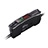
Fiber Sensors
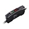
With these Separate-amplifier Sensors, the light from the Amplifier is transmitted through a fiber to enable detection in narrow places, other locations with limited access.
Photoelectric Sensors
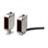
Photoelectric Sensors detect photo-optical workpieces. OMRON provides many varieties of Sensor, including diffuse-reflective, through-beam, retro-reflective, and distance-settable Sensors, as well as Sensors with either built-in or separate amplifiers.
Displacement Sensors / Measurement Sensors
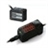
These Sensors can be used to measure distances and heights. A wide variety of models is available, including Laser Sensors, LED Sensors, Ultrasonic Sensors, Contact Sensors, Eddy Current Sensors, and more.
Vision Sensors / Machine Vision Systems
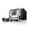
Vision Sensors/Machine Vision Systems analyze images to perform appearance inspections, character inspections, positioning, and defect inspections.
Code Readers / OCR
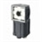
Code Readers can read 2D codes or bar codes and are available in installed or hand-held models.
Proximity Sensors
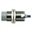
Proximity Sensors are available in models using high-frequency oscillation to detect ferrous and non-ferrous metal objects and in capacitive models to detect non-metal objects. Models are available with environment resistance, heat resistance, resistance to chemicals, and resistance to water.
Photomicro Sensors

These Optical Sensors provide a compact, low-cost method to detect workpieces. Many models are available, including Slot-type Sensors (through-beam) for non-modulated or modulated light, Reflective Sensors, and Sensors with separate emitters and receivers.
Rotary Encoders
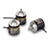
Rotary Encoders measure the number of rotations, the rotational angle, and the rotational position.
Ultrasonic Sensors
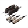
Ultrasonic waves are used to enable stable detection of transparent objects, such as transparent films, glass bottles, plastic bottles, and plate glass, using Through-beam or Reflective Sensors.
Pressure Sensors
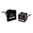
With Pressure Sensors, changes in pressure can be measured to confirm suction, verify mounting, manage source pressures, and test for leaking. Differential Pressure Flow Sensors are also available.
Contact Sensors / Liquid Leakage Sensors
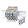
Contact Sensors which detect objects by physically contacting them and Liquid Leakage Sensors which detect liquid leaks
Related Contents